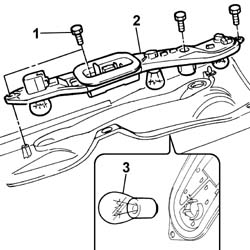
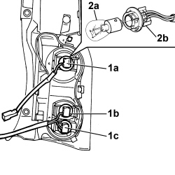
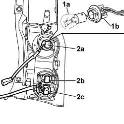
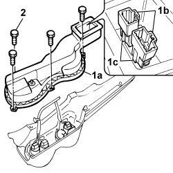

5540A50 TAIL-LIGHT BULB (ONE), LH OR RH - REPLACE
- Path
- Procedures > 55 ELECTRICAL EQUIPMENT > 5540 EXTERIOR LIGHTING > 5540A LIGHTING > 5540A50 TAIL-LIGHT BULB (ONE), LH OR RH - REPLACE
- Kind
- repair procedure (removal / refitting; the operation number is the code)
- Applies to
- all engines; all production periods
- Interactive page
- https://sloeber94.github.io/elrnDB-fPnd/en/#/2752971
Applies to: all engines; all production periods
 Removing
Removing
 Refitting
Refitting
Applies to: engines: 1.3 JTD 16v; all production periods; only with equipment: SUV
Removing
RefittingDisconnect the negative battery terminal.
Applies to: engines: 1.3 JTD 16v; all production periods; only with equipment: SUV
1. Undo the retaining bolts.
2. Release connectors (2a) from anchorage brackets (2b).
3. Remove the rear cover.

Applies to: engines: 1.3 JTD 16v; all production periods; only with equipment: SUV
1. Rotate the bulb holder in an anti-clockwise direction and remove bulb holder (1a), (1b) or (1c)complete with the bulb.
- 1a – side/brake light bulb;
- 1b – direction indicator bulb;
- 1c - rear foglamp bulb if working on the left tail-light assembly;
- 1c - reversing light bulb if working on the right tail-light assembly;
2. Press bulb (2a) and turn anticlockwise and remove from bulb holder (2b).

Applies to: engines: 1.3 JTD 16v; all production periods; only with equipment: SUV
Refitting
Removing1. Fit bulb (1b) in bulb holder (1b), inserting in its seat after pressing and turning clockwise.
2. Fit the bulb holder (2a), (2b) or (2c) with bulb and secure by turning clockwise.
- 2a – side/brake light bulb;
- 2b – direction indicator bulb;
- 2c - rear foglamp bulb if working on the left tail-light assembly;
- 2c - reversing light bulb if working on the right tail-light assembly;

Applies to: engines: 1.3 JTD 16v; all production periods; only with equipment: SUV
1. Fit rear cover (1a) and secure connectors (1b) to anchorage brackets (1c).
2. Tighten the fixing bolts.

Applies to: engines: 1.3 JTD 16v; all production periods; only with equipment: SUV
Op. 5540A44 L/H OR R/H TAIL LIGHT (ONE) - R+R
Connect the negative battery terminal.